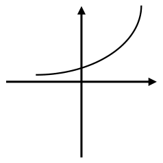
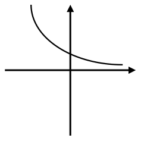
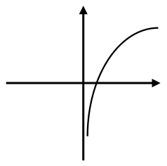
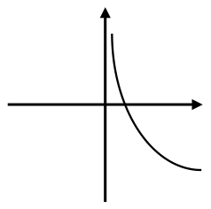

第八章 指數與對數函數
學測數學A 複習講義 · 5 節
使用方式：內容中的 ？ 就是講義的填空——點一下顯示答案，再點一下收回；也可用上方 「全部顯示答案」 一次切換整章（＝教師版）。圖可點擊放大。
脈絡導讀指數與對數是「成長與尺度」的語言（★★中頻），也是前面好幾章的交會點。
學習脈絡：指數律 → 指數函數 → 對數定義與對數律 → 對數函數（指數的反函數）→ 解指對方程式與不等式 → 常用對數（科學記號、位數）。
一句心法貫穿全章：指對互為反函數（對稱於 \(y = x\)）；
解指對式先「同底」再比較，別忘真數 \(> 0\)；遇成長／衰退就想指數，遇位數／數量級就取 \(\log\)。
一定義
考點
- 指數函數：設a > 0 , a \(\neq\) 1 , 則 ？ y=\({a}^{x}\) 稱為指數函數，其中a稱為 ？底數
- 對數函數：設a > 0 , a \(\neq\) 1 , x > 0 則 ？y= \({log}_{a}x\) 稱為對數函數，
其中a稱為 ？底數 ， x稱為 ？真數 。
- \(\log_{a}x = y \Leftrightarrow\) ？\({a}^{y} = x\)
二運算
考點
- 指數律（\(a\ ,\ b > 0\) 、\(x,y\mathbb{\in R}\)）：
- \(a^{x} \cdot a^{y} =\) ？\({a}^{x + y}\)
- \(\frac{a^{x}}{a^{y}} =\) ？\({a}^{x - y}\)
- \(\left( a^{x} \right)^{y} =\) ？\({a}^{xy}\)
- \((ab)^{x} =\)？\( {a}^{x}{b}^{x}\)
- 特例：\(a^{0} =\) ？\(1\)；\(a^{- x} =\) ？\(\frac{1}{{a}^{x}}\)；\(a^{1/n} =\) ？\(\sqrt[{\, n\, }]{a}\)
- 對數律：
- 加法：\(\log_{a}x + \log_{a}y =\)？\( {log}_{a}\left( xy \right)\)；
- 減法：\(\log_{a}x - \log_{a}y =\)？\( {log}_{a}\frac{x}{y}\)
- 係數：m？\(\log_{a}x{= \ \ log}_{a}\left( {x}^{m} \right) =\) \({log}_{{a}^{\frac{1}{m}}}x\)
\(\frac{m}{n}\log_{a}x\) = ？\({\ \ log}_{{a}^{n}}\left( {x}^{m} \right)\)
\(\log_{a}x\) = ？\({\ \ log}_{{a}^{n}}\left( {x}^{n} \right)\)
- 換底公式：\(\log_{a}x =\) ？\(\frac{{log}_{b}x}{{log}_{b}a}\)
- \(\log_{a}b \bullet \log_{b}c \bullet \log_{c}d\) = ？\({log}_{a}d\) ；\(\log_{a}b \bullet \log_{b}a =\) 1 \(\leftrightarrow\) \(\log_{a}b = \)？\(\frac{1}{{log}_{b}a}\)
- 特值：\(\log_{a}a =\) ？\(1\)；\(\log_{a}1 =\) ？\(0\) ；\(\log_{a}a^{x} =\)？\( x\) ；\(a^{\log_{a}x}\)=？\(\ x\)
三圖形
| 函數 | \(y = a^{x}\) | \(y = \log_{a}x\) |
|---|
| 分類 | a > 1 | 0 < a < 1 | a > 1 | 0 < a < 1 |
| 圖形 |  |  |  |  |
| 函數增減 | 嚴格？遞增函數 \(x_{1} > x_{2} \Leftrightarrow a^{x_{1}} > a^{x_{2}}\) | 嚴格？遞減函數 \(x_{1} > x_{2} \Leftrightarrow a^{x_{1}} < a^{x_{2}}\) | 嚴格？遞增函數 \(x_{1} > x_{2} \Leftrightarrow \log_{a}x_{1} > \log_{a}x_{2}\) | 嚴格？遞減函數 \[x_{1} > x_{2} \Leftrightarrow \log_{a}x_{1} < \log_{a}x_{2}\] |
| 凹口方向 | 凹口向？上 | 凹口向？下 | 凹口向？上 |
| 性質1 | 恆在 ？\(x\) 軸上方 | 恆在？\(y\) 軸右側 |
| 性質2 | 恆過 ？\((0,1)\) | 恆過 ？\((1,0)\) |
| 漸近線 | ？\(x\) 軸 | ？\(y\) 軸 |
- \(y = a^{x}\) 與 \(y = \left( \frac{1}{a} \right)^{x} = a^{- x}\) 圖形對稱於 ？\(y\) 軸。
- \(y = \log_{a}x\) 與 \(y = \log_{\frac{1}{a}}x = - \log_{a}x\) 圖形對稱於 ？\(x\) 軸。
- \(y = \log_{a}x\) 與 \(y = a^{x}\) 互為 ？反函數，圖形對稱於 ？\(y = x\)
- 圖形平移：
| | 右移 \(h\) 單位、上移 \(k\) 單位 | 整理 |
|---|
| \[y = a^{x}\] | ？\[(y - k) = {a}^{x - b}\] | ？\[y = {a}^{x - b} + k\] |
| \[y = \log_{a}x\] | ？\[(y - k) = {log}_{a}(x - h)\] | ？\[y = {log}_{a}(x - h) + k\] |
- 反函數就是把 \(x\)、\(y\) 對調——所以
指數過 \((0,1)\)、對數就過 \((1,0)\)；
指數漸近線 \(y = 0\)、對數漸近線 \(x = 0\)；
兩圖沿 \(y = x\) 互相鏡射。
四解指數與對數方程式、不等式
考點
- 同底比較：\(a^{f(x)} = a^{g(x)} \Leftrightarrow\) ？\(f\left( x \right) = g\left( x \right)\)
- 不等式：\(a > 1\) 時 \(a^{f} > a^{g} \Leftrightarrow f > g\)（同向）；\(0 < a < 1\) 時 ？不等號要反向
- 對數方程式：先確認 ？真數 \( > 0\)，再用對數律合併、化成同底
- 若出現 \(\log_{a}x\)、\((\log_{a}x)^{2}\)，可用代換法，令 \(\log_{a}x = t\)。
標準流程：先化成同底，再脫底比較；但 \(0 < a < 1\) 時不等號要反向。
對數式務必先檢查真數 \(> 0\)、底數 \(> 0\) 且底數 \(\neq 1\)，把不合的解去掉。
五常用對數：科學記號與位數
考點
- 科學記號 x\(=\)？\( a \times {10}^{n}\)（\(1 \leq a < 10\)）：\(\log x\) 的整數部分（首數）\(=\) ？\(n\)
\(10^{n} \leq \ x\ \leq 10^{n + 1}\)
- 正整數 \(\ x\) 的位數 \(=\)？\( n + 1\)
- \(0 < \ x < 1\) 時，小數點後第一個非零數字出現在第 ？\( - n\) 位
位數問題的核心是「取 \(\log\) 看整數部分」。求 \(2^{x}\) 是幾位數，就算 \(x\log 2\) 的整數部分再加 \(1\)。
🧭判斷流程：看到 X → 用 Y
| 看到…（題目特徵） | → 就用…（工具 / 方法） |
|---|
| \(a^{x} \cdot a^{y}\)、\(\left( a^{x} \right)^{y}\) 等 | 指數律合併（同底加指數） |
| 解 \(a^{f} = a^{g}\) 型方程式 | 化同底，脫底比較 \(f = g\) |
| 解指對不等式 | 同底比較；\(0 < a < 1\) 反向；查真數 \(> 0\) |
| 乘除／次方要拆開算 | 取對數（乘除變加減、次方變乘） |
| 求位數／數量級 | 取常用對數，位數 \(= \lfloor logx\rfloor + 1\) |
| 等比數列／指數成長 | 取 \(\log\) 變等差／直線（接第 4、7 章） |
🔗跨章鏈結：遇到沒看過的題，從這裡接
- 取對數讓「等比變等差」：等比數列 \(a_{1}r^{\, n - 1}\) 取 \(\log\) 後變成 \(\log a_{1} + (n - 1)\log r\)——
公比 \(r\) 變成公差 \(\log r\)，等比就攤平成等差（第 4 章，如 111單4、112多9、115單3）。這是指對數與數列最常一起考的橋。 - 取對數把曲線拉直：資料呈指數關係時，先取 \(\log\) 再做迴歸，彎曲的趨勢就被拉成直線（第 7 章，如
112單3）——和上一條是同一個「取 \(\log\) 降階」的招。 - 指數律 ＝ 乘法公式的延伸：「同底相乘、指數相加」和第 2 章多項式的「合併同類項」是同一種精神；而指對的反函數關係，也呼應第 3 章「對調 \(x\)、\(y\)」的對稱觀念。
- 含 \(\log\) 的機率題先解 \(\log\)：第 6 章帶 \(\log\) 條件的機率題（如
109單6），要先用本章指對數把條件解開，再回去數機率。
📝練習指引：歷屆題號（106–115）
- 指數律與指數方程（★★☆）：
106單2、108單3、112單1 - 對數運算・換底／積化和（★★☆）：
108單5、111單2、111單4 - 常用對數・科學記號／位數／估計（★★☆）：
106選E、107單4、109多11、110選E - 指數／對數函數圖形與模型（★★★）：
110選D、113單1、113多7、114單4 - 與數列／數據結合（★★★）：
110單2、112單3、112多9、115單3、115選15
考場心法指對三招：指對互為反函數（對稱 \(y = x\)）；
解指對式先「同底」再比較（\(0 < a < 1\) 不等號反向、真數 \(> 0\)）；
遇成長衰退就想指數，遇位數、數量級就取 \(\log\)。
本站使用 Google Analytics 與 Microsoft Clarity 統計匿名流量，藉以了解使用情況、持續改善內容。
mathmap 數學地圖 © Kitty